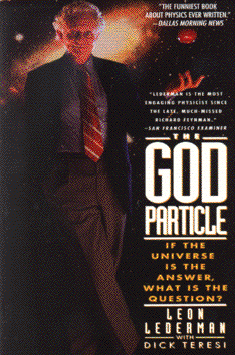

The God Particle:If the Universe is the Answer,
What is the Question?by Leon Lederman with Dick Teresi
publisher: Delta (Bantam Books)
Non-fiction, 410 pages | 
(book cover art, Copyright ©1993 Leon Lederman and Dick Teresi)
Used with Permission. |
Return to the Book MenuPrevious|Next
Description:
An exploration into mankind's continuing quest to find out
what the world (and the universe) is made of. Lederman, a Nobel prizewinner,
uses humor as he goes deeper and deeper into the atom and the ways we discovered
what it is made of, up to the proposed Superconducting Supercollider.
Recommended for: people intersted in quarks, gluons
and leptons; future science researchers.
Did-you-read questions:
Deadline: February 1, 2005.
These should be easy questions, but you should have the questions ready and keep an eye out during your reading. Each question should be answered with 1-2 sentences.
Note: these questions are not probably not the most important part of the book! Your essay will not have to cover these questions!
- What is "the God Particle," in the author's opinion? What are two other
names for it?
- At the beginning of chapter 3, why is Burger King listed on the map? (What
happened there?)
- What did the critics think about Maxwellís theory of electromagnetism?
- Why did Ernest O. Lawrence have an affinity for the letter "D"?
- What was the author's first reaction to hearing a lecture in 1956 by Murray
Gell-Mann?
Report Questions:Deadline: Peer Review Session on February 8, 2005; paper due February 10, 2005.
You should write a 3 - 4 page essay on one of the following questions. Your essay should include examples and references to the book, unless otherwise specified. Page number references are sufficient for citing material from the primary book. If you use outside materials, cite your sources in full. If you would rather write on a different topic, you may, but clear it with Mr. Howe or Ms. Sullivan first.
- The author was (and is) a big proponent of the Superconducting Supercollider
project, as you may have noticed. Does his writing seem biased? What do
you think about this project, based on your experiences as well as reading
this book?
- The author tries to use humor very frequently in this book. There are many
jokes in it, about one per page at the beginning. Is this an effective
strategy in writing about science? Did it make it easier or more interesting
for you as you read? Give specifics, including what did or did not work.
- The research that the author expouses is largely determined to find the
smallest, most elementary particles, a search which is ongoing. Make up
a debate between two imaginary characters about whether it is a worthwhile
enteprise to continue. Make you debate as evenly matched as possible.
- Much of this book talks about the smallest things possible. However, it
also talks about some of the largest things possible. How do these two
concepts relate to each other? (They are in the same book, yes, but why?)
Graphic and Presentation:
Deadline: February 21 - March 3, 2005.You will give a 10 minute presentation on both of the following:
- Convince your peers that they should (or should not) read this book. (This may include a brief summary of the book.) Give examples of what was cool or worthwhile in the book, and what you got out of it (or didn't).
- Describe a (realistic) science idea that you learned about in this book, citing information from at least 2 external sources (other than the dictionary). If you would like help choosing or understanding an idea from your book, you are invited to come talk to Mr. Howe or Ms. Sullivan.
Note: This presentation should not be just a reading of your paper!Along with this presentation, you should have a graphic that will go with it. A Power Point presentation is recommended, but if you have a special idea for a something else, such as a model, an original video presentation, or a well done drawing/ painting/ sculpture/ etc., you may do so, provided it involves a similar level of effort and polish. Speak to Mr. Howe or Ms. Sullivan first if you are considering an alternate graphic format to the Power Point.
Return to the Book MenuPrevious|Next